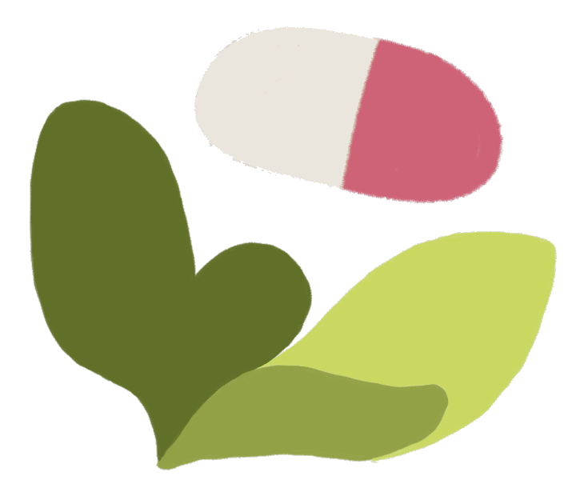

sprout
Demo mode: dispensing is simulated, nothing is sent to a real machine.
- Today: tap pills in Manual mode, then Dispense
- My Pills: open Vitamin D, log a refill or take a break
- + on My Pills: scan a label
- Schedule: drag Plan ahead, tap a day